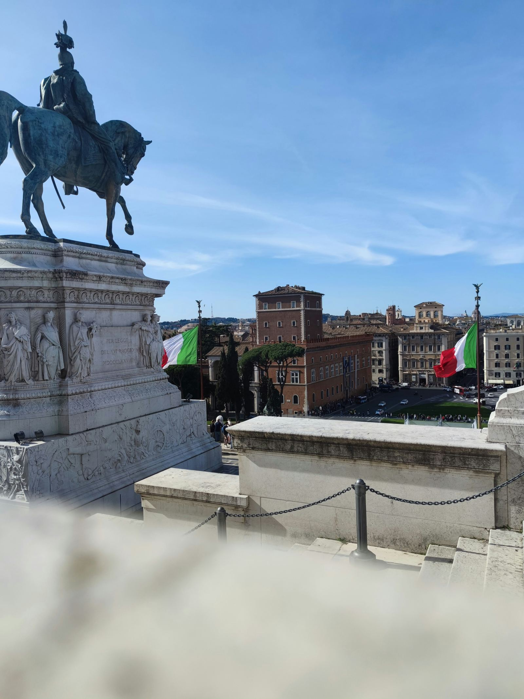

Learn about the separation of powers, legislative, executive, and judicial branches, and the role of the President. Explore Italy's constitutional framework and governmental organisation.
Approfondisci la separazione dei poteri, i rami legislativo, esecutivo e giudiziario, e il ruolo del Presidente. Esplora il quadro costituzionale e l'organizzazione governativa dell'Italia.
Il sistema politico italiano è una democrazia rappresentativa, dove il potere è distribuito tra diverse istituzioni per garantire il controllo e l'equilibrio. Dopo il referendum del 2 giugno 1946, l'Italia diventò una repubblica democratica e l'Assemblea Costituente fu incaricata di redigere la Costituzione, che entrò in vigore il 1º gennaio 1948.
L'organizzazione politica italiana si basa sulla separazione dei poteri: il Parlamento ha il potere legislativo, il governo esercita il potere esecutivo e la magistratura indipendente gestisce il potere giudiziario. Il Presidente della Repubblica rappresenta l'unità dello Stato ed è la figura di massima carica.

La Costituzione italiana è il documento fondamentale che stabilisce i principi, i diritti e i doveri dei cittadini. Il Parlamento è composto da due camere, il Senato della Repubblica e la Camera dei deputati, responsabili della legislazione. Tutte le leggi devono essere promulgate dal Presidente della Repubblica.
Il governo opera con una maggioranza parlamentare e può emettere decreti-legge solo in situazioni urgenti, che devono essere successivamente approvati dal Parlamento. La Corte Costituzionale è responsabile di verificare la costituzionalità delle leggi.
Il Presidente del Consiglio dei ministri è il capo del governo, nominato dal Presidente della Repubblica. Coordina le attività dei ministri e del governo. Il sistema politico italiano è caratterizzato da un sistema di partiti politici che influenzano la formazione del governo.
Durante il periodo del Regno d'Italia, la capitale e quindi il centro politico del paese fu spostata da Torino a Firenze nel 1865, prima di essere trasferita definitivamente a Roma nel 1871. Questo cambio rifletteva la volontà di centralizzare il potere politico e amministrativo nel cuore della nazione unita.

La Repubblica Italiana è un'organizzazione democratica con un sistema politico ben definito che garantisce la separazione dei poteri e il rispetto della Costituzione.
fonte: Sistema politico della Repubblica Italiana
Parole Chiave
| Democrazia | Un sistema di governo in cui il potere è detenuto dal popolo e esercitato attraverso rappresentanti eletti. |
| Rappresentativa | Descrive una forma di governo in cui i cittadini eleggono rappresentanti per prendere decisioni politiche al loro posto. |
| Repubblica | Una forma di governo in cui il capo di stato non è un monarca ereditario, ma è eletto o nominato per un periodo specifico. |
| Parlamentare | Un sistema di governo in cui il potere esecutivo è responsabile nei confronti del parlamento e dipende dalla sua fiducia. |
| Potere | L'autorità o il controllo per agire o decidere su qualcosa. |
| Esecutivo | Il ramo del governo responsabile dell'attuazione delle leggi e delle politiche. |
| Magistratura | L'insieme dei magistrati, ossia giudici e pubblici ministeri, responsabili di amministrare la giustizia. |
| Giudiziario | Relativo al sistema legale e alla giustizia. |
| Costituzione | Il documento fondamentale di un paese che stabilisce i principi e le regole del governo e i diritti dei cittadini. |
| Legislativo | Il ramo del governo responsabile della creazione e dell'approvazione delle leggi. |
| Presidente | Il capo di stato di un paese. |
| Unità | L'idea di essere insieme come un solo corpo o entità. |
| Camere | Le due divisioni del Parlamento italiano: il Senato e la Camera dei deputati. |
| Leggi | Regole e norme stabilite dal governo per regolare la società. |
| Promulgare | L'atto formale di approvare ufficialmente una legge. |
| Governo | L'insieme delle persone e delle istituzioni responsabili di guidare e gestire un paese. |
| Consultazione | Un incontro o una discussione per ottenere opinioni o consigli. |
| Fiducia | La fiducia o la convinzione nella competenza o nell'integrità di qualcuno o qualcosa. |
| Emergenza | Una situazione critica o urgente che richiede azione immediata. |
| Capo | La persona che guida o comanda un gruppo o un'organizzazione. |
| Coordinare | Organizzare e sincronizzare le attività o gli sforzi di più persone o gruppi. |
| Sistema | Un insieme di componenti interrelati che lavorano insieme per raggiungere un obiettivo comune. |
| Partiti | Organizzazioni politiche che rappresentano idee e interessi specifici e competono per il potere politico. |
| Formazione | Il processo di creazione o costituzione di qualcosa. |
| Nomina | Il processo di selezione e designazione di una persona per una posizione o un incarico. |
| Attività | Le azioni e le operazioni svolte da un individuo o un gruppo. |
| Sistema politico | L'organizzazione e il funzionamento del governo e delle istituzioni politiche di un paese. |
| Separazione dei poteri | Il principio di divisione del potere tra i rami legislativo, esecutivo e giudiziario di un governo. |
Esercizio
Domande
- Qual è la forma di governo della Repubblica Italiana?
- Cosa succede il 2 giugno 1946 in Italia?
- Quali sono i tre poteri principali separati nella struttura politica italiana?
- Chi è responsabile dell'attuazione delle leggi e delle politiche nel governo?
- Perché la capitale italiana viene trasferita da Firenze a Roma nel 1871?